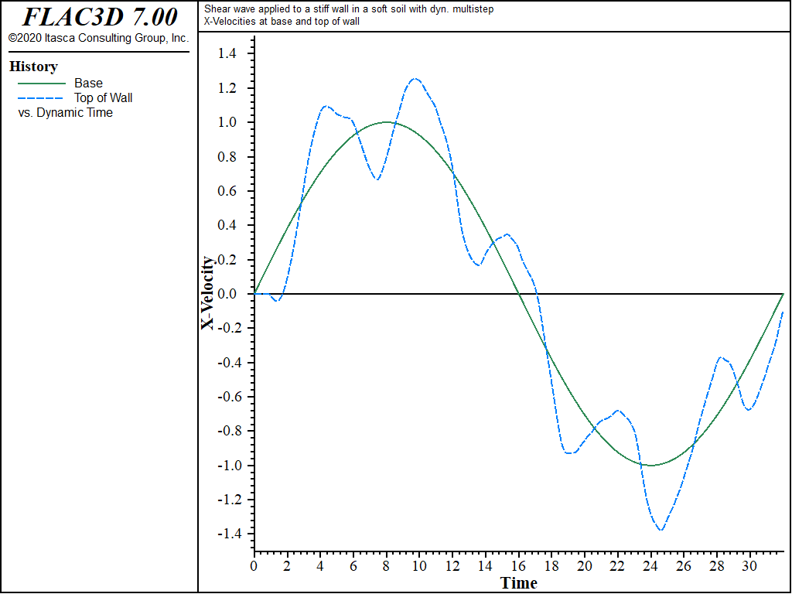

软土中刚性墙上的剪切波：动力多步
注意
要在 FLAC3D 中查看此项目，请使用菜单命令 。选择“Dynamic/ ShearWaveOnStiffWallInSoftSoil”并选择“ShearWaveOnStiffWallInSoftSoil. f3prj”以加载。 主数据文件见本示例末尾（main data file）。其余数据文件可在项目中找到。
这个小而简单的示例说明动力多重步进的后果。 模型由一道模量比周围材料大 150 倍的“墙”组成。在模型底部施加 1 s 时段的剪切波。
在 单元动力多步（zone dynamic multi-step） 开启（on） 的情况下，340 个网格单元的乘数为 1，2660 个网格单元的乘数为 8。在 6 核 CPU 上开启动力多重步进后，计算速度提高三倍。在模型底部和墙顶监测的 \(x\) 方向速度时程在开启与不开启多重步进时完全相同。
图 1（Figure 1） 绘制了多重步进运行的历史。


图 1：模型底部和墙顶的 x 方向速度。
数据文件
ShearWaveOnStiffWallInSoftSoil.dat
model large-strain off
;---------------------------------------------------------------------
; 动力算例
; 向软土中的刚性墙施加剪切波
; 采用动力多步法
;---------------------------------------------------------------------
model title ...
'Shear wave applied to a stiff wall in a soft soil with dyn. multistep'
model configure dynamic
;
; 创建网格单元
zone create brick size 80 20 40 ...
point 0 (-5,0,0) point 1 (15,0,0) ...
point 2 (-5,5,0) point 3 (-5,0,10)
zone face skin ; 标记模型边界
;
; 分配模型和属性
zone cmodel assign elastic
zone cmodel assign null range position-x=-5,5 position-z=5,10
zone property young 20e4 poisson 0.2 density 2000
zone property young 30e6 range position-x=5,6 position-z=5,10
;
; 边界条件
zone face apply velocity-z 0 range group 'East' or 'West'
zone face apply velocity-normal 0 range group 'North' or 'South'
fish define wave
wave = math.sin(math.pi * dynamic.time.total / 16.0)
end
zone face apply velocity-x = 1 fish wave range group 'Bottom'
zone face apply velocity-normal 0 range group 'Bottom'
;
; 历史
zone history name='xvelb' velocity-x position (5,2, 0)
zone history name='xvelt' velocity-x position (5,2,10)
zone history name='zvelt' velocity-z position (5,2,10)
model history name='time' dynamic time-total
;
; 设置多步计算状态，循环计算至 32，并记录耗时
zone dynamic multi-step [multi]
[global start = time.clock]
model solve time-total 32.0
[global time = 0.01 * (time.clock - start)]
[time]
| 这些内容对您有帮助吗？… 版权与免责声明 |
FLAC3D © 2019, Itasca | 原文更新于 2020 年 10 月 8 日 |